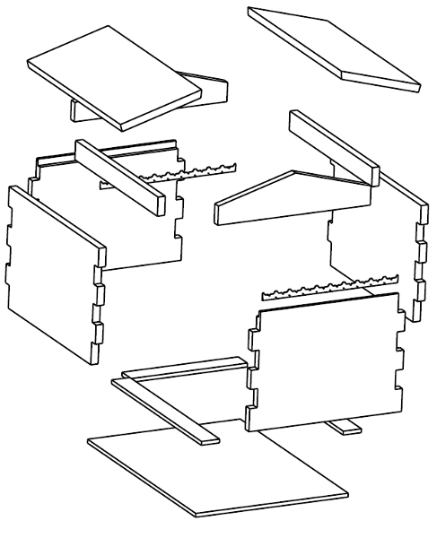
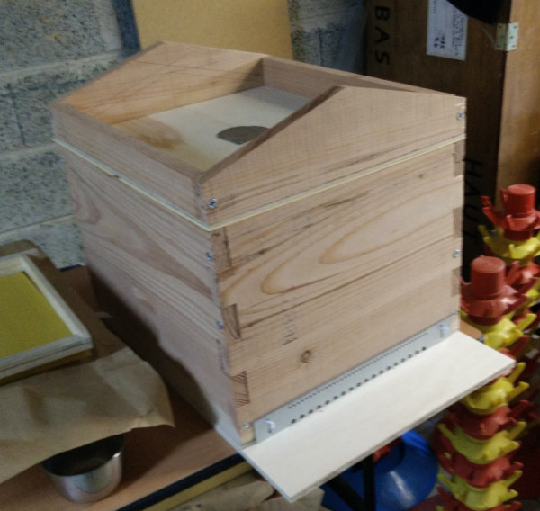
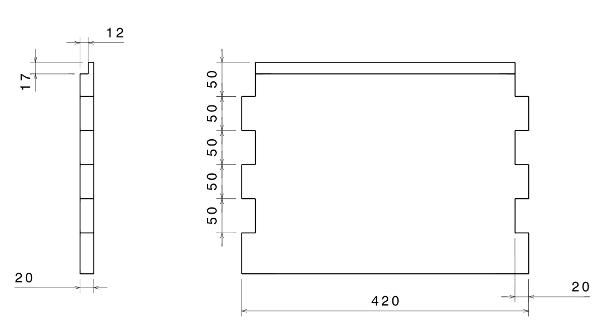

Ca m’a pris comme une envie de … Enfin, non, ça me trottait dans la tête depuis quelques années. C’est comme une taupe. Elle pousse, elle gêne, et puis, il faut concrétiser.
La saison prochaine, je me lance dans l’élevage d’abeilles. C’est pas mon truc d’acheter le matériel tout fait (cf, ma pico brasserie entièrement bricolée), donc, fabrication maison ! Et puis, par expérience, quand on se construit son matériel, ça nous oblige à bien nous documenter, et au final, on maîtrise mieux le sujet. Autre argument : une ruche coûte plus de 100€. je la fabriquerai pour moins de 60€:
- 20€ de pin douglas
- 18€ de contre-plaqué
- 15€ de tôle galvanisée
Les types de ruches
Comme vous pouvez imaginer, il y a un paquets de types de ruches. On trouve les ruches tronc (dans des troncs d’arbres, des ruches Dadant, des ruches Warré, … Le type de ruche à la mode en France est la Warré. J’aime pas la mode.
Pour résumer, le modèle Warré n’a pas de cadres (juste des baguettes de bois à partir desquelles les abeilles bâtissent leur rayons de cire). Le type Dadant, modèle traditionnel en France comporte des cadres avec une feuille de cire, pour “imposer” le sens de bâtissage des rayons de cire.
Et puis, il y a cet article qui m’a beaucoup plu : http://www.abeille-et-nature.com/index.php?cat=essaims&page=ruche_warre2. J’ai donc décidé de partir sur le modèle Dadant.
Composition d’une ruche
Une ruche, c’est:
- Un corps principal (dans laquelle on trouve la reine; on ne touche pas au miel : il appartient aux abeilles)
- Des hausses (C’est là que l’on trouve le miel à récolter)
- Un fond avec une planche d’envol
- Un toit
Il y a encores quelques éléments comme:
- Le couvre cadre
- La grille à reine(qui empêche la reine de monter dans les hausses)
- La porte (qui ne laisse pas passer le frelon asiatique)
- …
Quelques dimensions à connaître
Les dimensions de la ruche sont déduites de quelques données d’entrée:
- Un cadre mesure 433mm de large et 300mm de hauteur
- Les cadres sont disposés tous les 38mm
- S’il existe un espace de plus de 10mm, les abeilles combleront avec de la cire
- S’il existe un espace de moins de 6mm, les abeilles combleront avec du propolis
Comme je veux faire une ruche à 10 cadres, les dimensions intérieures sont : 450mm x 380mm, et 310mm de hauteur.
On la fait en quoi ?
Les abeilles sont très sensibles aux pesticides et tous ces trucs. Il faut donc utiliser du bois non traité. J’ai choisi d’utiliser du pin Douglas en 20mm, acheté directement en scierie. J’ai trouvé des planches qui font plus de 400mm de large. Ça tombe bien, la hauteur de ma ruche est de 310mm.
Par contre, pour le fond, j’ai dû prendre du contre-plaqué (idem pour le couvre-cadre).

Pour protéger le toit, je voulais du zinc, mais je n’ai pas trouvé. Je me suis rabattu sur de la tôle galvanisée, achetée chez un vendeur de métal (dans les magasins de brico, c’est hors de prix)
Outillage
On s’en sort pas avec un marteau et une scie. Il faut un minimum d’outillage:
- Une scie circulaire
- Une scie sauteuse
- Une ponceuse
- Une perceuse
- Râpe, gouge, équerre, …
Construction

L’assemblage se fait avec des queues droites. Pour les réaliser (sans machine à bois), on y va à coups de scie sauteuse. Il faut être très précis. On adapte avec une râpe. Ensuite tout est vissé (attention, pas de colle ! les abeilles n’aiment pas). L’assemblage est fait avec des vis à bois de longueur 50mm et diamètre 6mm. Donc pour ne pas éclater le bois, un perçage à 3mm ou 4mm de diamètre est nécessaire.
Dans le dessin de définition ci-dessus (devant et derrière), j’y ai prévu une encoche pour loger les cadres. Ces encoches sont réalisées avec la scie circulaire. Mettez en place un guide fixé à la planche au sert-joint; ensuite, finissez à la gouge. On y clouera une crémaillère : C’est une pièce en tôle d’acier que l’on trouve en magasin spécialisé pour quelques centimes (http://www.abeille35.com/equipement-des-ruches/319-cremaillere-l-45-cm-pour-10-cadres.html). Ça fixe la distance entre les cadres.Les plans
- https://github.com/landru29/hive/raw/master/Hive.pdf
- https://github.com/landru29/hive/raw/master/Main-Back-Front.pdf
- https://github.com/landru29/hive/raw/master/Main-Side.pdf
- https://github.com/landru29/hive/raw/master/Additional-Back-Front.pdf
- https://github.com/landru29/hive/raw/master/Additional-Side.pdf
- https://github.com/landru29/hive/raw/master/Bottom.pdf
- https://github.com/landru29/hive/raw/master/Roof-Gable.pdf
- https://github.com/landru29/hive/raw/master/Roof-Top.pdf
Tout le reste est sur mon github. Des mises à jours arriveront au fil de l’eau : https://github.com/landru29/hive